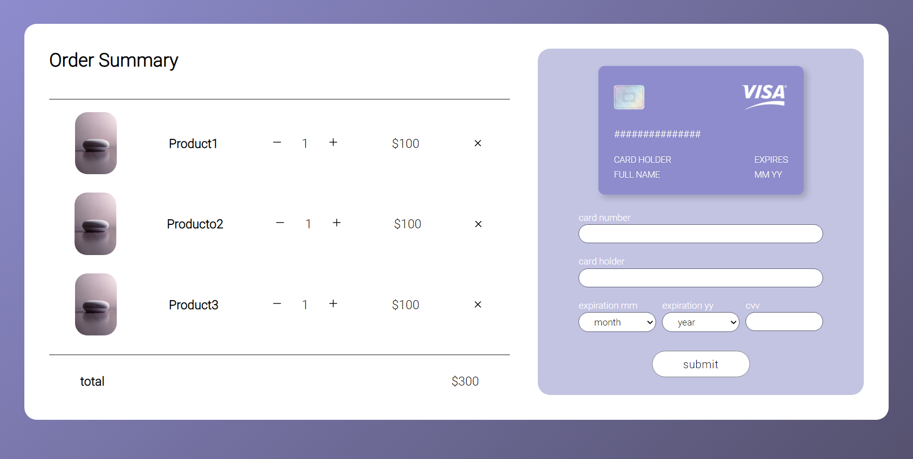

2022.3.5
Daily UI Day 2 - Checkout page
Daily UI 快變成 Weekly UI 了，但最近太忙了，有一些想做的計畫，之後有空再說哈哈。 這次的題目是做一個結帳頁面，所以我就想左邊放商品的資訊，名字、數量和價錢，原本想做成可以新增刪除和自訂數量的，但做完就有點懶得搞了， 右邊放輸入信用卡號的地方，比較有趣的是，上面的信用卡會跟著你輸入的文字做改變，輸入安全代碼的時候卡片還會翻到後面喔。 (不過用safari看好像會有點問題) 快點我 這個效果是參考YT:Mr. Web Designer的影片做出來的，我把影片連結放在下面。 ttps://www.youtube.com/watch?v=G7_VTWnWz40 以後可能真的一個禮拜更新一次哈哈，希望真的能做完100個。